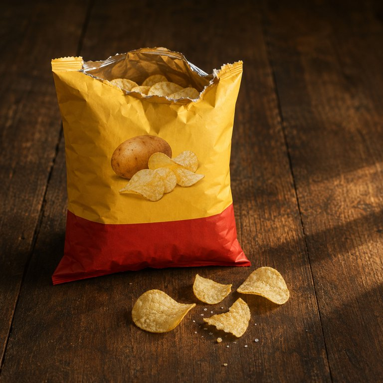

原味 · 第 1 片

盒盖内侧的便签：买的是一袋空气，附赠三十片土豆。空气不好吃，土豆可以。
两手捏住顶封口往两边扯，封边裂开是短促的一声撕，跟着一口气从缝里泄出来，噗。撕口一路走歪，一边高一边低。袋口张开，往里看，片子只占下面三分之一，上面全是撑袋子的气。像是花钱买了大半袋薯片味的空气，薯片才是赠品。气一泄，袋子软下去一半，手里轻了。
- 包装
- 手伸进袋口，捏出一片，指尖一层油。
- 看
- 先挑一片弧度完整、边缘浅的，捏在指间轻得微微颤。
- 闻
- 袋口先冒出来的是新鲜的薯香，略甜，然后是温和的炸油气，底下一点干淀粉的味，像纸袋。盐没有味道，但闻得出咸，是那种让人先咽一下口水的闻。
- 入口头两秒
- 第一片是整袋最响的一声，脆得不真实，闭着嘴也听得见。盐粒先化在舌尖，咸得直接。第一枚碎屑掉在衣襟上。
- 化的方式
- 嚼两下就不脆了，薄片碎成轻而小的渣，卡在牙缝里，几下变成湿软的薯泥，像化开。这时候土豆本来的味才出来，油裹着盐在嘴里糊一层，没有别的调味来转场，就是薯、油、盐。咽下去嘴里还留着渣，舌头自己去舔牙缝。拇指和食指立刻发亮，两指一搓是滑的，盐末能搓成细颗粒。舔舔手指，还有薯片的油香味和咸味。
- 余味（大约 3 分钟散完）
- 0 分钟上颚挂着一层薄油膜，舌尖还有细盐的刺感，嘴唇是咸的。1 分钟咸退得快，短短一层炸薯香留在喉咙口，开始想喝水。2 分钟嘴里差不多净了，只剩指尖那点油和盐，捏一下会粘。